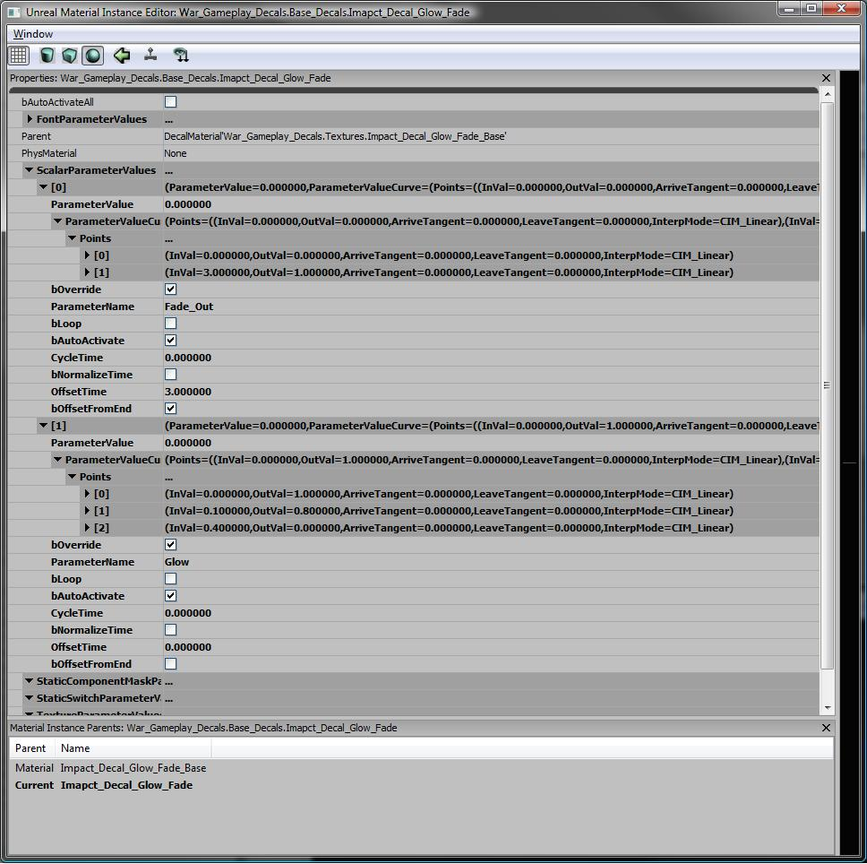

UDN
Search public documentation:
InstancedMaterials_TimeVaryingJP
English Translation
中国翻译
한국어
Interested in the Unreal Engine?
Visit the Unreal Technology site.
Looking for jobs and company info?
Check out the Epic games site.
Questions about support via UDN?
Contact the UDN Staff
中国翻译
한국어
Interested in the Unreal Engine?
Visit the Unreal Technology site.
Looking for jobs and company info?
Check out the Epic games site.
Questions about support via UDN?
Contact the UDN Staff
Material Instance Time Varying
ドキュメントの概要: Material Instance Time Varying (マテリアル インスタンス時間変動) の定義とその使い方の概要。 ドキュメントの変更ログ: Martin Sweitzer により作成概要
Material Instance Time Varying (MITV、マテリアル インスタンス時間変動) は、UE3 のもう 1 つのタイプの InstancedMaterial で、その主な目的はマテリアルの経時的変化の制御を概ねコンテンツチームに委ねることにあります。通常、経時的に変化するマテリアルを構成するにはパラメータを操るコードが必要ですが、その手間を回避するのが狙いです。 デカールがポッピング (飛び出し) しないようにフェードアウトさせるのにこれらを使用して、さりげなく磨きをかけるのが優れたテクニックです。MITV の作成
BaseMaterial を用意し、経時的に変動させたいパラメータを設定します。(例えば、何かを経時的にフェードアウトさせるには、値が 0 のときはマテリアルはフェードアウトせず、1 で完全にフェードアウトするようなパラメータを用意して FadeVal などのような名前を付けます)。 MITV を実際に作成するには、MIC の作成手順と同じ手順に従います。具体的には、マテリアルを右クリックして [Create New Material Instance Time Varying] (MITVを新規作成) を選択します。MITV の構成構成その動作
MITV を作成した後で、MITV の経時的に変化させるためパラメータを多数設定し、値を指定することができます。 bLoop: True の場合、CycleTime はループ時間とループ回数です。 bAutoActivate: このパラメータを自動的にアクティブにします。 CycleTime: 時間の正規化とループ時間を制御します。 bNormalizeTime: True の場合、CycleTime を使用してすべてのキーがゼロから 1 のまで間に収まるように時間をスケールします。 OffsetTime: これを実際に起動するまでの待機時間。カーブをパラメータの制御データだけにして、始めに発生する多量の停滞を含めたくない場合に便利です (例えば、フェードの開始前に N 秒待機するなど)。 bOffsetFromEnd: OffsetTime を使用する場合に、デカールの生存時間の終わりからオフセットできるようにします (例えば、デカールをフェードアウトさせて、消える前にその色を変更したい場合など)。 各種のカーブデータ: パラメータ値の設定前に評価されるデータです。UE3 に登場する他のカーブと同様に、カーブに値 (この場合は時刻) を渡します。カーブはその InVal を評価し、パラメータを計算値に設定します。サンプル
MITV のサンプル

この MITV には、Fade_Out (フェードアウト) と Glow (グロー) の 2 つのフェード パラメータがあります。 Glow パラメータは、このマテリアルがワールドに置かれると同時に開始します。カーブを見ると 1 から 0 に進むのに .4 秒かかることがわかります。このグローは開始時には明るく、徐々にフェードダウンして輝きを失います。 Fade_Out パラメータには bOffsetFromEnd があり、終了時点から OffsetTime (この場合は 3 秒) 前にカーブが開始することを意味します。そのため、このマテリアルがコードからスポーンされ、継続時間に制限がある場合は、この Fade_Out は終了時間の 3 秒前からフェードアウトを開始し、3 秒の間に Fade_Out パラメータを 0 から 1 に変化させます。プログラマー用の説明
スクリプト内での MITV の使用
MITV の使い方は、MIC の使用とほぼ同じです。唯一の例外は、、すべての TimeVarying が正しく発生するように、MITV の存続期間である Duration を設定する必要がある点です。 以下のサンプルでは、MITV がスポーンされ、次に "SetDuration" の呼び出しがこの期間を設定し、MITV を 「開始」しています。
MITV_Decal = new(self) class'MaterialInstanceTimeVarying';
MITV_Decal.SetParent( Source.DecalMaterial );
MITV_Decal.SetDuration( DecalLifeSpan );
SetDecalMaterial(MITV_Decal);